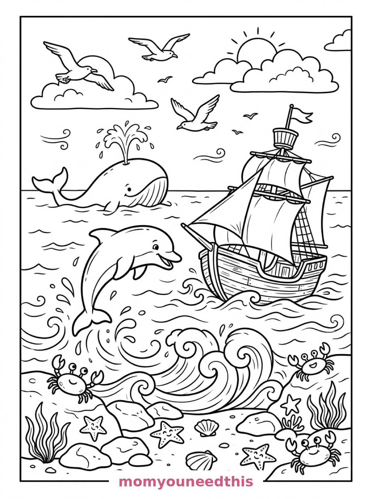
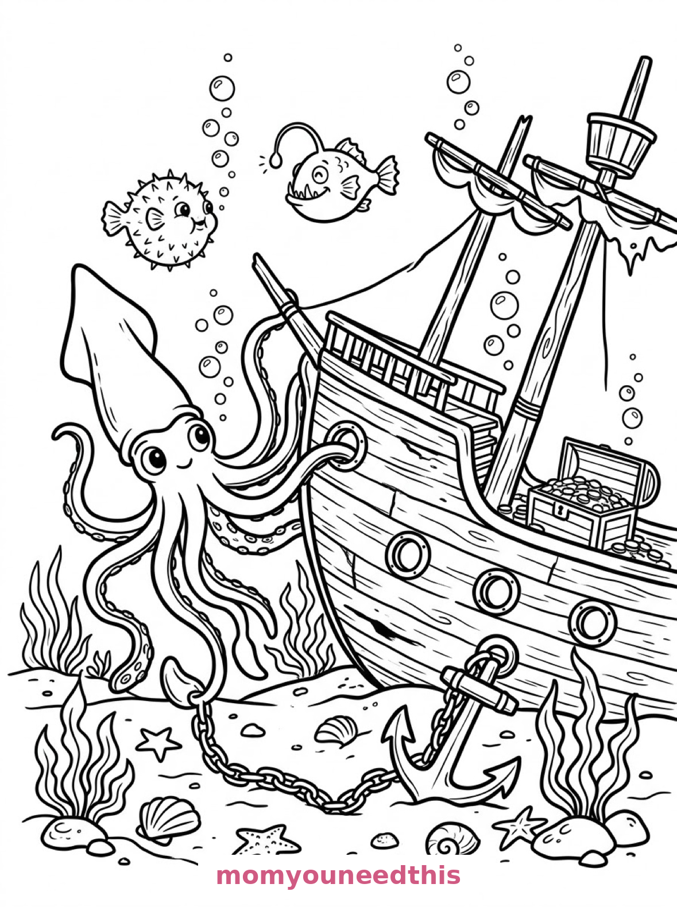
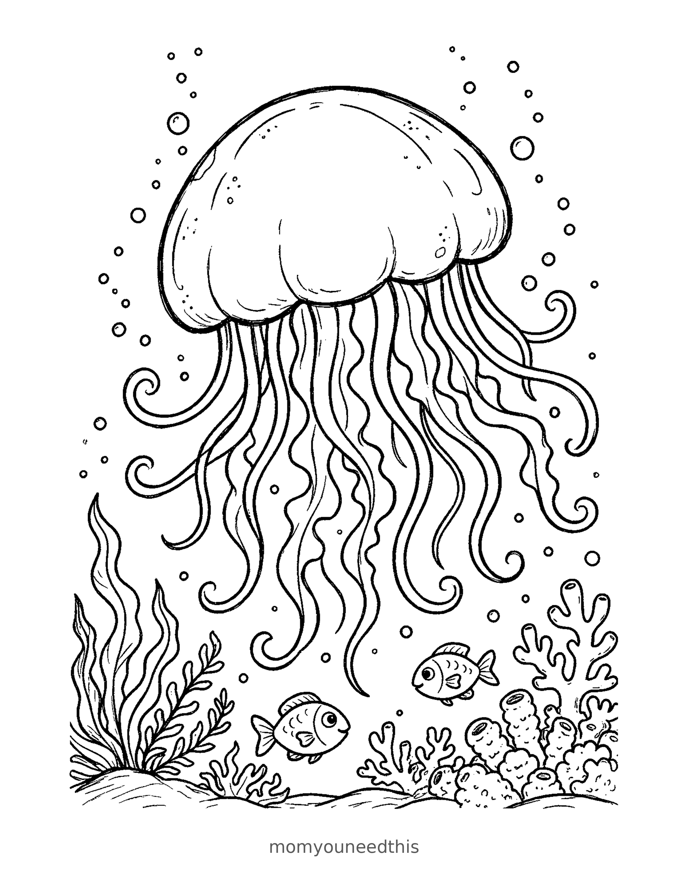

Free Ocean Animals Coloring Pages Reef Turtle, Dolphin & Whale, Giant Squid Printables
These free ocean animals coloring pages dive from a sunny reef to a deep-sea shipwreck — a sea turtle over coral, a dolphin and whale beside a sailing boat, a giant squid by a sunken treasure ship, and a jellyfish drifting over the coral. Download the set below, print at home on letter-size paper, and let the coloring fun begin. No signup needed. If your little one came here hunting for whale coloring pages, the surface scene is the one to print first — a whale spouting beside a leaping dolphin and a sailing boat.
Last updated: November 5, 2026
Quick Answer
Yes — this page has four free printable ocean animals coloring pages: a sea turtle swimming over a coral reef with an octopus and clownfish, a dolphin leaping beside a sailing boat while a whale spouts, a giant squid beside a sunken treasure ship, and a jellyfish with long wavy tentacles drifting above the coral. Bold outlines and big spaces, made for little hands. Download, print on letter-size paper, and hand over the crayons — no signup, no cost.
At a Glance
- Ages: 3–8
- Pages: 4 free printables
- Format: Print at home, letter size
- Cost: Free, no signup
- Supplies: Crayons or markers
- Time: 10–20 minutes
🐢 Sea Turtle Over the Coral Reef Coloring Page

🎨 Download Your Free Reef Turtle Coloring Page
A sea turtle swims above a coral reef where an octopus curls among the coral branches, clownfish weave through anemones and a seahorse clings to a strand of seaweed — bold outlines, big spaces, zero signup.
⬇️ Download Free Reef Turtle Page 🖨️ Print Reef Turtle Page🎁 Free printable for preschoolers & kids
🐬 Dolphin, Whale and the Sailing Boat Coloring Page

🎨 Download Your Free Dolphin and Whale Coloring Page
A dolphin leaps from the waves beside a wooden sailing boat while a whale spouts beyond it, gulls circle overhead and crabs and starfish dot the rocky shore — bold outlines, big spaces, zero signup.
⬇️ Download Free Dolphin & Whale Page 🖨️ Print Dolphin & Whale Page🎁 Free printable for preschoolers & kids
🦑 Giant Squid and the Sunken Ship Coloring Page

🎨 Download Your Free Giant Squid Coloring Page
A giant squid drifts beside a sunken treasure ship, with a pufferfish and an anglerfish nearby, strings of bubbles rising past portholes, an anchor and scattered shells on the seabed — bold outlines, big spaces, zero signup.
⬇️ Download Free Giant Squid Page 🖨️ Print Giant Squid Page🎁 Free printable for preschoolers & kids
Jellyfish Coloring Page

🎨 Download Your Free Jellyfish Coloring Page
A big jellyfish pulses above the coral, its long wavy tentacles trailing and curling, two small fish keeping a respectful distance below and bubbles rising all around — bold outlines, big spaces, zero signup. The jellyfish coloring page for kids who love the drifting corner of the ocean.
⬇️ Download Free Jellyfish Page 🖨️ Print Jellyfish Page🎁 Free printable for preschoolers & kids
More Coloring Pages
Tap any picture to open its theme page and download the free printable.


🐙 How To Use This Page
- Browse the four designs and pick the ocean scene your child will love most.
- Tap download or print under that design — the file opens full-size, ready for letter-size paper.
- Print a couple of copies of the reef turtle — a reef is never the same color twice.
- Color together with crayons or markers and count the creatures on each page.
🌊 Why Kids Love Ocean Animals Coloring Pages
The ocean is a whole hidden world, and coloring pages are the cheapest submarine ride there is. These four designs visit every floor of it: the sunny reef where the turtle and clownfish live, the bright surface where dolphins leap and whales spout, and the deep, mysterious bottom where a giant squid guards a sunken ship.
Ocean pages are also color playgrounds. Coral can be pink, orange or purple; water can be turquoise or deep navy; and a pufferfish can be any pattern a child invents. Every page hides small creatures to find, so finishing the big animal is only the start. Each finished sheet is really a tiny field trip: three habitats, fourteen creatures, a sunken treasure ship, and one very patient tour guide holding the crayons from the sunny surface all the way down to the deep, dark bottom.
🐠 Meet the Four Ocean Scenes on This Page
The turtle over the reef. A sea turtle swims above a coral reef where an octopus curls among the coral branches, clownfish weave through anemones and a seahorse clings to a strand of seaweed. It is the fullest page in the set — a whole reef community in one sheet, with five creatures to find and color.
The dolphin and the whale. A dolphin leaps from the waves beside a wooden sailing boat while a whale spouts beyond it, gulls circle overhead, and crabs and starfish dot the rocky shore in the foreground. It is the sunniest page in the set — the only one above water — and the fastest to finish for young colorers.
The giant squid and the ship. A giant squid drifts beside a sunken treasure ship deep below, with a pufferfish and an anglerfish nearby, strings of bubbles rising past the portholes, and anchors and shells scattered on the seabed. It is the most mysterious page in the set — color the water dark and the whole scene glows.
The jellyfish over the coral. A big jellyfish drifts above a patch of coral and seaweed, its dome pulsing and its long tentacles curling in the current. Two small fish keep a careful distance below — even fish know not to touch the tentacles — and bubbles rise through the water all around. It is the calmest page in the set, and the tentacles are a coloring gift: every one can be a different color.
✏️ Ocean Animal Coloring Tips
- Layer the water. Light blue at the top, deeper blue at the bottom — two blues instantly make the picture feel like the real sea.
- Give the coral the bright colors. Real reefs are rainbows: pink, orange, purple and red coral against blue water looks spectacular.
- Pattern the turtle's shell. The turtle's shell sections are made for alternating colors — a gentle first pattern project.
- Leave the bubbles white. Tiny white circles in colored water read as rising bubbles every time.
🐙 Coloring Pages for Different Ages
For ages 3 to 4, start with the dolphin and the whale. The two big animals and the boat are bold, simple shapes, and the shore crabs are a quick extra.
For ages 5 to 6, the reef turtle is the sweet spot. Five creatures in one scene means constant small wins, and the coral branches are satisfying chunks of color.
For ages 7 to 8, hand over the giant squid. The ship, the bubbles, the anglerfish and the seabed details reward patience — and older kids love making the deep water properly dark and mysterious.
🌊 More Ocean Fun After Coloring
Count the creatures: the reef page alone hides a turtle, an octopus, clownfish, a seahorse and more. Write the tally on the back of each finished page and see which design wins the creature count.
For the close-up reef residents, visit the sea creatures coloring pages — an octopus on a coral arch, a mermaid's garden and a tide pool. And for the ocean's biggest personality, the shark coloring pages are circling nearby.
🔗 More Free Printables You’ll Love
- Free Sea Creatures Coloring Pages An octopus arch, a mermaid's garden and a tide pool to color.
- Free Dolphin Coloring Pages Leaping dolphins, a mother and calf, and a beach-ball trick.
- Free Shark Coloring Pages A kelp forest, a pirate ship and a coral canyon to color.
- All Free Coloring Pages Browse every free coloring page on the site, organized by theme.
❓ Ocean Animals Coloring Pages FAQ
Are these ocean animals coloring pages really free?
Yes — all four designs on this page are free original printables from MomYouNeedThis. Download them, print them at home, and color — no signup and no cost.
What ages are these coloring pages best for?
Kids ages 3 to 8 get the most from this set. The dolphin and whale scene is the gentlest start for younger children, while the reef and deep-sea scenes have the detail older kids enjoy.
How do I print a coloring page?
Tap the download button under the design you want, then print the file on regular letter-size paper. The print button opens the full-size page in a new tab if you prefer to print from there.
Which ocean animals appear in this set?
A sea turtle, an octopus, clownfish and a seahorse on the reef page; a dolphin, a whale, crabs and starfish on the surface page; and a giant squid, a pufferfish and an anglerfish on the deep-sea page, and a jellyfish with two small fish above the coral — fourteen creatures across the four designs.
Can I make an ocean coloring book from these pages?
Yes — print all four designs, stack them in order, and staple along the left edge. Add a cover sheet with your child's name for a finished homemade ocean animals coloring book.
Are there crab coloring pages and seahorse coloring pages in this set?
Yes — crabs scuttle across the surface page beside the whale and the dolphin, and a seahorse swims on the reef page with the sea turtle, octopus and clownfish. Both are part of the same free four-page set.
Is there a jellyfish coloring page in this set?
Yes — this set includes a jellyfish coloring page: a big jellyfish with long, wavy tentacles drifting above coral and seaweed, with two small fish below and bubbles rising around it. It is free to download and print, like every design on this page.